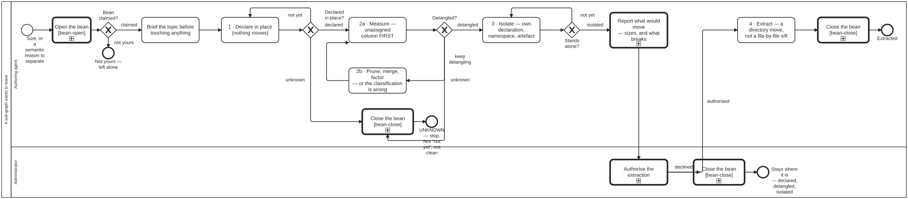

Generated from
cat-harness/processes/kg/graph-detanglement.bpmnbygen-processes-viz.ts— do not edit here. All processes
Process_GraphDetanglement · strict · 8 step(s)
Part of a repository wants to leave, for size or a semantic reason: four gated stages measure it out of the graph before anything moves, and an administrator authorises the extraction. THE FOUR STAGES ARE GATES, NOT ADVICE, AND THAT IS THE WHOLE REASON THIS IS A DIAGRAM. graph-detanglement.md says “nothing moves until the stage before it measures zero” in prose, and prose is what an agent under pressure talks itself past. Each gate here is a DECISION TABLE: workflow_complete refuses a hand-supplied outcome at a cat-harness.processes:decision gateway, so the branch is computed from the counts a tool already produced rather than asserted.
THE SHARPEST GATE IS Detangled?, AND IT IS SHARP BECAUSE OF ITS RULE ORDER. unassignedEdges > 0 returns unknown BEFORE the cross-edge rule is reached, so a zero cross-edge count over an unjudged corpus cannot be read as a pass. repo-partition.ts states it in its own voice — “these are not cross-edges, they are edges this tool declined to judge. Do not read them as clean” — and move 1 of the practice is exactly that sentence. A person can skip it. A table cannot.
EVERY GATE HAS A THIRD STATE AND NONE OF THEM RENDERS IT AS CLEAN. Declared in place? answers unknown on a declaration that did not parse rather than “not yet”, because one says the work has not started and the other says nobody can tell. Detangled? answers unknown on an incomplete measurement. Both route to End_Unknown, which is a REFUSAL to advance — the process stops rather than proceeding on a guess.
DECLARING IS CHEAP AND EXTRACTING IS EXPENSIVE, WHICH IS THE POINT. Stage 1 moves nothing: the sub-graph is declared where it already sits, still inside the repository, still connected. The worked example was the WHO base harness’s methodologies/, declared in place and lifted out whole when that harness became its own repository.
STAGE 2 IS A LOOP, AND THE LOOP IS LOAD-BEARING. Prune, merge, factor, or reclassify returns to Measure rather than to the gate, because an assignment is verified by RE-RUNNING and never by being locally reasonable — the obvious move, the one the tool’s own message asks for, once took the count from 5 to 15. The four moves are the only four: the first three are the block-scale rule, and “the classification is wrong” is the fourth the repository scale adds because a module’s layer is in doubt the way a block’s chapter is not.
ISOLATION IS NOT ZERO EDGES. A sub-graph with no inbound edges can still carry no declaration, no namespace and no published artefact, and lifting that directory produces a repository that cannot say what it is. bootstrap/ is the demonstrated case and the shape to match.
THE EXTRACTION IS A PERSON’S DECISION, AND THE LANE SAYS SO. Authorise the extraction sits in the Administrator lane because an extraction moves durable artefacts out of a repository, and deletion-requires-confirmation is not a courtesy the agent may waive: the agent reports what would move, and waits. The administrator lane is the one whose activities change the substrate every other diagram’s lanes bind to, which is exactly what a repository cut does.

graph-detanglement skill without calling this process: A knowledge graph leaves for its own repositories, A sub-KG is staged in place, then leaves for its own repository — activity-calls-skill-process asks whether each should be a call activity.| lane | role | what it does here |
|---|---|---|
| Authoring agent | authoring-agent |
Runs every stage up to the edge of authorisation — brief, declare, measure, move-and-remeasure, isolate — and Task_Propose is the last thing it does off its own judgement: reporting sizes and what would break, then waiting. Verification here is always by RE-RUNNING the measurement rather than by an assignment being locally reasonable, which is why Task_Move loops back to Task_Measure and not to the gate — a move that looks right is not yet a move that measured right. |
| Administrator | administrator |
Reached only after Declared, Detangled and Isolated have each independently cleared — so this lane is never asked to judge the measurement, only whether an already-clean extraction may proceed. Declining is not a refusal back to unknown: End_Declined leaves the sub-graph declared, detangled and isolated in place, which is a real outcome of this process and not merely the absence of one. |
Every one of the 8 step(s) is documented.
| step | lane | skill / sub-process | what it does |
|---|---|---|---|
Brief the topic before touching anythingTask_Brief |
Authoring agent | opening-brief |
What am I doing and why is it worth doing; what do I already know, with each measurement’s provenance; how do I plan to do it and WHAT WOULD FALSIFY THE APPROACH. A falsifier that never fires is decoration — this practice’s own fired, took edges 5 to 12, and rewrote the plan. |
1 · Declare in place (nothing moves)Task_Declare |
Authoring agent | graph-detanglement |
A <name>.json entry with its graphs[] kinds. A sub-graph that owns its own layout gains a NESTED declaration whose paths resolve against its own directory, so the whole graph relocates by moving one folder. |
2a · Measure — unassigned column FIRSTTask_Measure |
Authoring agent | graph-detanglement |
bun run cat check:partition. Read the unassigned column before the edge count, and quote BOTH numbers rather than only the one that improved. The count rising when the measurement improves is correct: 43 to 49 when thirteen previously-unjudged edges were folded in. |
2b · Prune, merge, factor — or the classification is wrongTask_Move |
Authoring agent | graph-detanglement |
The only four moves. Move the shared TARGET first and the importers after; check the target’s layer before the importer’s; a schema moves with its script. The fix is never an exemption, it is the right owner. |
3 · Isolate — own declaration, namespace, artefactTask_Isolate |
Authoring agent | graph-detanglement |
Only once cross-edges measure zero: give the sub-graph its own declaration, its own namespace and its own published artefact, as bootstrap/ has (its own declaration, bs: namespace and graph document). Nothing moves yet; the sub-graph now stands alone in place. |
Report what would move — sizes, and what breaksTask_Propose |
Authoring agent | deletion-requires-confirmation |
The agent reports and waits. deletion-requires-confirmation is not a courtesy to waive: an agent never removes or relocates a durable artefact on its own initiative. |
Authorise the extractionTask_Authorise |
Administrator | deletion-requires-confirmation |
The one step no package may relax. A repository cut changes the substrate every other diagram’s lanes bind to, and that is a person’s decision. |
4 · Extract — a directory move, not a file-by-file siftTask_Extract |
Authoring agent | graph-detanglement |
Only once edges are zero and the declaration stands alone: move the sub-graph out as one directory move, not a file-by-file sift. Its nested declaration resolves paths against its own directory, so moving the folder moves the graph. The five-point gate is in migration-plan.md Phase II. |
Every one of the 3 decision(s) is documented.
| decision | what decides it | branches |
|---|---|---|
Declared in place?GW_Declared |
Computed, not chosen: decisions/subgraph-declared-gate.dmn (hit policy FIRST) over three inputs — the declaration parsed (readable), an entry present for the sub-graph, and every declared path exists. Unparseable goes to unknown, a fault rather than ‘not yet’, and stops the process. No entry, or a declared path that does not exist (bean dh4f), goes to not yet, back to Declare. Otherwise declared, on to Measure. |
unknown → UNKNOWN — stop. Not “not yet”, not clean declared → 2a · Measure — unassigned column FIRST not yet → 1 · Declare in place (nothing moves) |
Detangled?GW_Detangled |
Computed from check:partition’s counts by decisions/detanglement-gate.dmn (hit policy FIRST). unassignedEdges > 0 answers unknown BEFORE the cross-edge rule is reached, because a zero cross-edge count over an unjudged corpus is not a pass; that stops the process. crossEdges > 0 answers keep detangling: prune, merge, factor, or reclassify, then re-measure. Zero of both is detangled, on to Isolate. |
unknown → UNKNOWN — stop. Not “not yet”, not clean keep detangling → 2b · Prune, merge, factor — or the classification is wrong detangled → 3 · Isolate — own declaration, namespace, artefact |
Stands alone?GW_Isolated |
Computed by decisions/isolation-gate.dmn (hit policy FIRST) over three inputs: its own declaration with paths relative to itself, its own namespace with every minted term defined, and a published artefact of its own. Any one missing answers not yet, back to Isolate. All three answer isolated, on to reporting what would move and waiting for a person to authorise it. Zero edges alone is not isolation. |
not yet → 3 · Isolate — own declaration, namespace, artefact isolated → Report what would move — sizes, and what breaks |